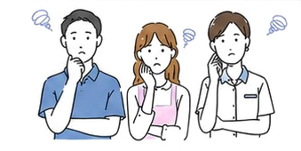

安心感が伝わる
お店の想いや雰囲気を写真と言葉で伝えることで、信頼感が高まります。
徳島のWebサイト制作・作成代行
トクシルは、徳島の学生がAIを活用し、地域のお店のホームページ制作・LINE導線・Web発信を支援するサービスです。お店の魅力を整理し、予約やLINE相談につながる導線づくりをサポートします。
Webサイトの有無で、お店の見つけられやすさや信頼感は大きく変わります。
お店の想いや雰囲気を写真と言葉で伝えることで、信頼感が高まります。
検索や地図、紹介から見つけてもらえる接点が増えます。
分かりやすい導線で、 予約・問い合わせのハードルを下げます。
サービスや強みを整理し、伝える順番ときれいな
デザインにまとめます。
公式LINEの作成と連携により、情報発信やリピート施策を強化できます。
トクシルは、徳島の学生による、徳島の個人事業者に向けたWeb制作サービスです。ホームページ制作・公式LINE・チラシ制作まで、最先端のAIと学生のスキルを活かして幅広く支援します。若い視点とAIの力で、徳島の企業・店舗、そして地域全体を盛り上げていきます。
トクシルは、日本の未来を作るのは若者だと信じ、学生時代から地域に価値を提供する機会を生み出します。 学生と地域を結びつけることで徳島の未来をより明るくします。
魅力が伝わるオリジナルサイトを制作
手に取りたくなる販促物をデザイン
つながりとリピートを生む導線づくり
更新・分析・改善まで伴走支援
ヒアリングから公開まで、必要な範囲を絞ってスピーディーに進めます。
学生の実践経験とAIの効率化で、一般的なWeb制作会社より始めやすい価格を 実現しています。
約6分の1の価格帯から固定概念にとらわれず、地域のお店の新しい切り口を伝えます。
お店の雰囲気や地域性を理解し、顔の見える距離感で進めます。
専門用語を避け、分かりやすく相談できる進行を大切にします。
その他の制作実績も多数ございます。詳しくはLINEからご相談ください。
3万円〜
Google Map・Instagramから 飛ばせるスマホ対応の 1ページLPを制作。
5万円〜
テンプレートを活用し、
複数ページのWebサイトを制作。
8万円〜
Webサイト制作に加え、
公式LINEの作成・導線設計まで対応。
現状やお悩みを
ヒアリングします。
お店の魅力や目的を
丁寧に伺います。
構成案とデザインを
ご提案します。
確認を重ねながら
制作します。
公開後も必要に
応じて支援します。
ご相談内容やご予算に応じて、柔軟にご提案します。お気軽にご相談ください。
Leader - 神山まるごと高専
組織全体を統括し、企画・提案・ディレクションを担当。学生視点と行動力を活かして、地域やお店の魅力を形にします。
企画 / 提案 / ディレクション
Programmer - 神山まるごと高専
Webサイト制作者を統括し、実装・設計・AI活用を担当。使いやすく、伝わりやすいWeb体験を技術面から支えます。
実装 / 設計 / AI活用
彼らの他10名以上のメンバーが全力でお客様の期待に応えます。
内容によりますが、ライトな構成であれば最短2週間程度を目安に進行します。
可能です。徳島県内の場合は、必要に応じて対面での相談も調整します。
更新しやすい構成で制作し、必要に応じて更新方法もご案内します。
ドメイン・サーバー費用など、外部サービスに必要な費用は別途発生する場合があります。
はい。スマートフォンでも見やすく操作しやすいレスポンシブデザインで制作します。
はい。徳島県内の飲食店、美容室、整体院、個人事業主、小規模事業者のWebサイト制作やホームページ作成代行を想定しています。
相談できます。お店の強みや伝えたい内容をヒアリングし、必要な写真・文章・ページ構成を一緒に整理します。
はい。Instagram、公式LINE、Googleマップ、チラシなどからWebサイトへつながる導線を想定して制作します。
ホームページ制作・Webサイト作成代行のご相談は、すべてLINEから受け付けています。

何から始めればいいか分からない
ホームページが古くて見づらい
予約や問い合わせにつながらない
新規顧客の獲得が難しい
制作会社に頼むと高そうで不安
お店の魅力が伝わっていない
Webサイトの有無で、お店の見つけられやすさや信頼感は 大きく変わります。
お店の想いや雰囲気を写真と言葉で伝えることで、 信頼感が高まります。
検索や地図、紹介から見つけてもらえる接点が増えます。
分かりやすい導線で、予約・問い合わせのハードルを下げます。
サービスや強みを整理し、伝える順番ときれいなデザインにまとめます。
トクシルは、徳島の学生による、徳島の個人事業者に向けたWeb制作サービスです。ホームページ制作・公式LINE・チラシ制作まで、最先端のAIと学生のスキルを活かして幅広く支援します。
地域の魅力を、伝わる形へ。
学生と地域を結びつけることで、徳島の未来をより明るくします。
実際の制作イメージとあわせて、できることをご紹介します。
魅力が伝わるオリジナルサイトを制作します。
予約、お問い合わせ。リピートを生む導線づくりを支援します。
手に取りたくなる販促物をデザインします。
更新・分析・改善まで伴走して支援します。
学生の実践経験とAIの効率化で、一般的なWeb制作会社より始めやすい価格を実現しています。
約6分の1の価格帯からヒアリングから公開まで、必要な範囲を絞ってスピーディーに進めます。
固定概念にとらわれず、地域のお店の新しい切り口を伝えます。
お店の雰囲気や地域性を理解し、顔の見える距離感で進めます。
専門用語を避け、分かりやすく相談できる進行を大切にします。
その他の制作実績も多数ございます。 詳しくはLINEからご相談ください。
3万円〜
Google Map・Instagramから飛ばせる、スマホ対応の1ページLPを制作。
5万円〜
テンプレートを活用し、複数ページのWebサイトを制作。
8万円〜
Webサイト制作に加え、公式LINEの作成・導線設計まで対応。
現状やお悩みをヒアリングします。
お店の魅力や目的を丁寧に伺います。
構成案とデザインをご提案します。
確認を重ねながら制作します。
公開後も必要に応じて支援します。
ご相談内容やご予算に応じて、柔軟にご提案します。 お気軽にご相談ください。
Leader - 神山まるごと高専
企画・提案・ディレクションを担当。学生視点と行動力で地域やお店の魅力を形にします。
企画 / 提案 / ディレクション
Programmer - 神山まるごと高専
実装・設計・AI活用を担当。使いやすく伝わりやすいWeb体験を技術面から支えます。
実装 / 設計 / AI活用
彼らの他10名以上のメンバーが全力でお客様の期待に応えます。
内容によりますが、ライトな構成であれば最短2週間程度を目安に進行します。
可能です。徳島県内の場合は、必要に応じて対面での相談も調整します。
更新しやすい構成で制作し、必要に応じて更新方法もご案内します。
ドメイン・サーバー費用など、外部サービスに必要な費用は別途発生する場合があります。
はい。スマートフォンでも見やすく操作しやすいレスポンシブデザインで制作します。
はい。飲食店、美容室、整体院、個人事業主、小規模事業者のWebサイト制作を想定しています。
相談できます。お店の強みや伝えたい内容をヒアリングし、必要な写真・文章・構成を一緒に整理します。
ホームページ制作・Webサイト作成代行のご相談は、すべてLINEから受け付けています。
LINEで無料相談する